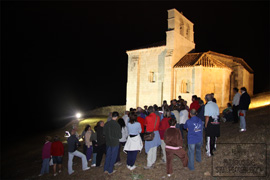

Tuvimos el honor de que nos acompañara el Jefe de Cultura de la Excma. Diputación Provincial de Burgos, D. Salvador Domingo Mena, que fue un gran apoyo y una inyección de moral y ánimo para la Asociación.
Organizamos el III Concurso Floral. Los ramos presentados fueron magníficos, los participantes se superan cada año, y se esmeran especialmente en poner flor morada, recordando los desaparecidos lirios. En agradecimiento a este detalle entregamos un premio especial para el mejor ramo con este color de flores.
- 
-
Este año, en colaboración con la Parroquia hemos celebrado una visita nocturna de la Ermita, un espectáculo de luz y sonido, a la altura de nuestras posibilidades, pero ha sido magnífico, si a la belleza natural de San Pantaleón le añadimos la iluminación y una buena música, junto con la magia de las noches del verano losino, el resultado es algo espectacular.
{kind=link}
Hemos ganado un primer premio, presentando fotografías de San Pantaleón al Concurso Fotográfico "Caballo Losino", dentro del apartado "Paisajes del Valle de Losa", organizado por el Ilustre Ayuntamiento de Medina de Pomar y la Junta Administrativa del pueblo de Criales. Y para rematar el año, el día 18 de Diciembre, nos trajeron desde Burgos el "Belén de la Montaña", y permaneció en la ermita durante toda la Navidad.